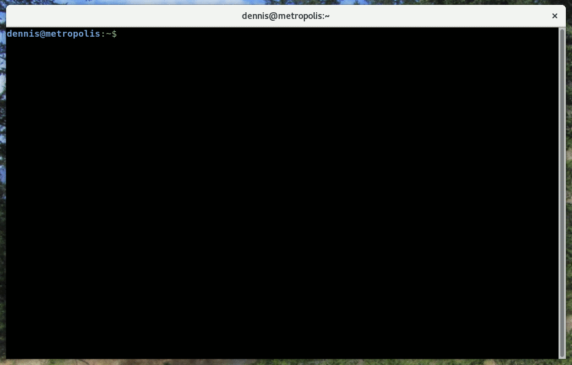

Unser Webservice soll ein kleines G√§stebuch üìñ implementieren. Die folgende Klasse stellt daher einen Eintrag im G√§stebuch dar, wie er zwischen Client und Server ausgetauscht wird.
Die Annotation
Klassische Webanwendungen besitzen keine Trennung zwischen Frontend und Backend, sondern nutzen den Server auch zur Generierung des HTML-Codes der Benzeroberfl√§che. üñåÔ∏è REST-Webservices erlauben uns stattdessen, Frontend und Backend getrennt voneinader zu entwickeln. In diesem Kapitel lernst du wie.
| üåé | Clientseitige Webanwendungen nutzen REST-Webservices h√§ufig als Backend-Schnittstelle. |
| üåç | Mobile Apps aber auch Desktopanwendungen kommunzieren oft via REST mit Cloud- und Serverdiensten. |
| üåè | Unternehmen nutzen REST-Webservices zur Realisierung firmen√ºbergreifender Gesch√§ftsprozesse. |
Moderne Webanwendungen entkoppeln das Frontend als browserseitige Anwendung vom Backend, indem beide unabhängig voneinander entwickelt werden und nur über REST-Schnittstellen kommunizieren. In großen Anwendungen befinden hierfür sich sogar die Codedateien des Frontends auf einem eigenen Webserver. Dies steht im Gegensatz zu klassischen Webanwendungen ohne JavaScript, in denen der Server nach jeder Aktion dynamisch erzeugten HTML-Code an den Browser schickt.

Bildnachweise: Pixabay: www_slon_pics, Pixabay: Julius_Silver, Pixabay: TheDigitalArtist, Pixabay: Didgeman, Pixabay: joe137, Pixabay: Olichel
Mobile Apps und auch Desktopanwendungen kommunizieren häufig mit Clouddiensten und Servern im Internet. In neueren Anwendungen kommen hierfür vermehrt REST-Webservices als universale Schnitttelle zum Einsatz.

Bildnachweise: Pixabay: Webflippy, Pixabay: 200degress,
REST-Webservices (und häufig auch noch SOAP-Webservices) werden im Unternehmensumfeld häufig eingesetzt, um firmenübergreifende Geschäftsprozesse abzubilden oder ganz allgemein Geschäftsvorfälle digital abzuwickeln und zu automatisieren. Immer mehr Unternehmen ermöglichen deshalb eine Beauftragung ihrer Leistungen über eine REST-API, um damit in die Warenwirtschaftssysteme ihrer Kunden integriert werden zu können.

Bildnachweis: Pixabay: Kaz
Unsere Geschichte beginnt mit einen Browser, einem Webserver …

… und einem Anwender, der eine URL eingibt.

Daraufhin baut der Browser eine Verbindung zum Server auf.

Und sendet eine Anfrage zum Abruf der Seite. Eine GET-Anfrage.

Der Server antwortet mit Statuscode 200 und dem Inhalt der Seite.

Sogleich macht sich der Browser daran die Seite darzustellen.

Doch halt! Die Seite enthält ja noch Stylesheets, Skripte und Bilder.

Sie müssen natürlich auch alle abgerufen werden.

Und der Server antwortet wie immer fleißig mit den gewünschten Dateien.

Die Seite benötigt aber noch Daten zum anzeigen.

Also sendet sie noch mehr HTTP-Anfragen an den Server.

Und wieder antwortet der Server, dieses Mal allerdings mit JSON-Daten.

Am Ende ist die Seite vollständig aufgebaut und die Verbindung wird getrennt.

Happy End!
Bildnachweise: Pixabay: OpenClipart-Vectors, Pixabay: Clker-Free-Vector-Images, Pixabay: ROverhate, Pixabay: Jsprzperez Pixabay: bngdesigns
| Verb | Pfad | HTTP-Version | |
| POST | /feedback/save.php | HTTP/1.1 | Anfragezeile |
|
Host: www.wpvs.de Content-Type: text/json Accept: text/json Connection: keep-alive |
Header Fields ¹ | ||
| Leerzeile | |||
|
{ "course": "vertsys", "year": 2020, "text": "Vielen Dank für diese tolle Vorlesung!" } |
Request Body ¹ | ||
| HTTP-Version | Statuscode | Bezeichnung | |
| HTTP/1.1 | 200 | Ok | Antwortzeile |
|
Content-Type: text/json Content-Length: 55 Date: Sun, 15 Oct 2017 20:18:17 GMT |
Header Fields | ||
| Leerzeile | |||
|
{ "type": "success", "message": "Feedback wurde gespeichert", } |
Response Body | ||
Wir starten mit einer leeren Konsole. Du kennst doch die Konsole deines Betriebssystems, oder? üêí
Mit telnet stellen wir eine TCP/IP-Verbindung zum Webserver her.

Daraufhin meldet telnet, dass die Verbindung erfolgreich aufgebaut wurde und der Server wartet auf Eingaben.

Wir schicken eine GET-Anfrage zum Abruf der Datei /webprog/hallo-http.txt.

Als nächstes folgt das Header Field Host, da es mehrere Domains mit derselben IP-Adresse gibt.

Das war es dann auch schon mit den Header Fields. Zum Abschluss folgt deshalb eine Leerzeile.

Und schon schickt uns der Server die Antwort und trennt die Verbindung.

So einfach ist das. üëçüèª Allerdings nur mit HTTP/1, denn HTTP/2 kodiert die Nachrichten in einer kompakteren Bin√§rform.

Bildnachweis: Pixabay: janf93
¹ Optional
HEAD, OPTIONS, TRACE, PATCH
Domain des aufgerufenen Servers, um zwischen mehreren Domains mit derselben IP-Adresse unterscheiden zu können
Name, Version und Betriebssystem des Clients, wobei die Angaben meistens nicht stimmen
MIME-Type und ggf. Zeichensatz der im Body enthaltenen Daten
MIME-Type der erwarteten Antwort
Erwartete Sprachen (deutsch, englisch, …) der Antwort
Hinweise zur Aufrechterhaltung der TCP/IP-Verbindung für weitere Anfragen
MIME-Type und ggf. Zeichensatz der im Body enthaltenen Daten
Umleitung auf eine neue URL bzw. URL der gespeicherten Daten
Hinweise zur Pufferung der Antwort im Browsercache
Datum und Uhrzeit der letzten Änderung an den Daten
Dies war die ursprüngliche von Tim Berners-Lee entwickelte HTTP-Version, wie sie 1991 veröffentlicht wurde. In dieser Version gab es nur GET-Anfragen und noch keine Header Fields. Eine Anfrage bestand daher lediglich aus einer Zeile:
Die Antwort des Servers beinhalte nur den Inhalt der abgerufenen Datei, sonst nichts.
1996 wurde HTTP/1.0 veröffentlicht. Ab hier haben die HTTP-Nachrichten den oben gezeigten Aufbau.
Diese Version wurde 1999 veröffentlicht und brachte weitreichende Verbesserungen. Unter anderem die Möglichkeit, die Verbindung zwischen zwei Anfragen offen zu halten. Denn zuvor wurde die Verbindung nach jeder Antwort automatisch getrennt. Da aber gerade der Verbindungsaufbau bei TCP/IP sehr langsam ist, führte dies zu langen Wartezeiten, wenn mehrere Dateien vom selben Server abgerufen werden mussten.
2015 wurde HTTP/2 offiziell verabschiedet. In seinen Grundzügen basiert es auf dem von Google entwickelten SPDY-Protokoll. Die Inhalte der HTTP-Nachrichten sind weitgehend gleich geblieben, jedoch werden sie nicht mehr in der oben gezeigten Textform kodiert. Stattdessen kommt ein kompaktes und in vielen Dingen eindeutiger spezifiziertes Binärformat zum Einsatz.¹
Als weitere größere Neuerung führt HTTP/2 Server Push ein, wodurch der Server beim Abruf einer HTML-Seite selbstständig weitere Dateien an den Browser schicken kann. Somit können Stylesheets, Skripte und Bilder schon an den Browser geschickt werden, bevor dieser überhaupt weiß, dass er sie benötigen wird.
Stand 2020 hat sich HTTP/2 noch nicht vollständig gegen HTTP/1 durchgesetzt. Sehr viele Webseiten verwenden weiterhin HTTP/1. Inzwischen unterstützen aber alle Server, Browser und Frameworks das neue Protokoll.
¹ Beispielsweise war bei HTTP/1.x nie definiert, welche Bytefolge ein Zeilenende markiert.


| üèùÔ∏è | REST-Webservices nutzen HTTP und in der Regel JSON f√ºr den Zugriff auf maschinenlesbare Daten |
| üèùÔ∏è | Das Grundprinzip orientiert sich am Anlegen, Lesen, Aktualisieren und L√∂schen strukturierter Datens√§tze |
| üèùÔ∏è | Anhand verschiedener URLs kann auf Ressourcen, Collections, Stores und Actions zugegriffen werden |
| üèùÔ∏è | Das verwendete HTTP-Verb definiert dabei, ob die Daten gelesen, geschrieben oder gel√∂scht werden |
| üèùÔ∏è | Abruf und √Ñnderung der Daten erfolgen in fast allen F√§llen durch den Austausch kompletter Datens√§tze |
Ein einzelner Datensatz wird Ressource genannt. Jede Ressource besitzt eine eindeutige URL, unter der sie aufgerufen werden kann.
https://example.com/api/customers/{id}
https://example.com/api/customers/47110815
Mehrere Datensätze werden in einer Collection gesammelt, ähnlich wie die Tabellen einer SQL-Datenbank.
https://example.com/api/{collection}
https://example.com/api/customers
Im Gegensatz zu Collections speichern Stores zwar ebenfalls mehrere Datensätze, die URL wird jedoch vom Client festgelegt.
https://example.com/api/customers/{id}/{store}
https://example.com/api/customers/47110815/favorites
Prozedurale Aktionen, die nicht dem üblichen Lesen und Schreiben entsprechen, werden Controller¹ oder auch Actions genannt.
https://example.com/api/customers/{id}/{action}
https://example.com/api/customers/47110815/checkout
¹ Der Name Controller ist unglücklich gewählt, weil die serverseitigen Klassen zur Implementierung eines REST-Webservices in den meisten Frameworks auch Controller genannt werden. In der Vorlesung verwenden wir daher lieber den Begriff Action.
✅ Hierarchische URL-Struktur
Wie an den Beispielen zu sehen ist, sind die URLs hierarchisch aufgebaut, so dass Ressourcen, Collections, Stores und Actions
beliebig miteinander kombiniert werden können. Wichtig dabei ist, dass die URL immer eindeutig ausdrücken muss, auf welche
Daten zugegriffen werden soll, da die Serverseite in der Regel zustandslos, also ohne Situngsverwaltung, implementiert wird.
Statt also zum Beispiel den Bezahlvorgang in einem Webshop anhand der URL
✅ Schreibweise der URLs
Weit verbreitet ist, die URLs klein und ohne abschließenden Schrägstrich zu schreiben. Mehrere Wörter werden durch ein
Minuszeichen getrennt. Collections und Stores werden im Plural beschrieben, Actions hingegen im Singular.
Bildnachweise: Pixabay: Pexels, Pixabay: Mizianitka, Pixabay: jarmoluk, Pixabay: stokpic
| üèùÔ∏è | Jedes HTTP-Verb und jeder Stautscode besitzt in REST eine genau definierte Semantik |
| üèùÔ∏è | Bei einer Anfrage muss daher immer das zum gew√ºnschten Zugriff passende HTTP-Verb gesendet werden |
| üèùÔ∏è | Ebenso muss in der Antwort der Statuscode ausgewertet werden, um den Erfolg der Anfrage zu pr√ºfen |
| GET | Daten lesen |
| POST | Daten unter einer vom Server generierten URL speichern |
| PUT | Daten unter einer bereits bekannten URL speichern |
| PATCH | Einzelne Felder eines vorhandenen Datensatzes ändern |
| DELETE | Daten löschen |
| POST / PUT | Aufruf einer prozeduralen Aktion |
| 200 Ok | Allgemeine Erfolgsmeldung |
| 201 Created | Daten wurden angelegt |
| 204 No Content | Alles okay, ohne Daten zu schicken |
| 401 Unauthorized | Unzureichende Berechtigungen |
| 403 Forbidden | Zugriff prinzipiell nicht vorgesehen |
| 404 Not Found | Ungültige uRL |
GET-Anfragen an einer Collection oder einen Store führen in der Regel dazu, dass eine Zusammenfassung aller enthaltenen Daten gesendet wird. Oftmals können Anzahl, Umfang und Sortierung der Daten über URL-Parameter gesteuert werden.
GET-Anfragen an eine einzelne Ressourcen führen dazu, dass der komplette Datensatz übermittelt wird. Manche Webservices erlauben auch hier, über URL-Parameter nur bestimmte Felder anzufordern. Die meisten Webservices liefern aber einfach die komplette Ressource.
POST-Anfragen werden in der Regel an eine Collection geschickt, um neue Daten anzulegen. Der Server vergibt daraufhin eine neue URL und teilt diese zusammen mit einer Kopie der gespeicherten Daten mit. Stellt der Server fest, dass der anzulegende Datensatz bereits vorhanden ist, kann er diesen entweder überschreiben oder dies mit dem Statuscode 409 Conflict ablehnen.
Bei einer PUT-Anfrage kennt der Client die URL der abzuspeichernden Daten bereits, so dass die Anfrage direkt an die Ressource geschickt werden kann. Meistens wird dies zum Überschreiben vorhandener Datensätze genutzt. Es gibt aber auch Services, welche eine Neuanlage auf diese Weise erlauben. Manche Webservices liefern auch hier als Antwort eine Kopie der gespeicherten Daten. Üblich ist aber auch, einfach mit Status 204 No Content zu antworten und davon auszugehen, dass der Client due vollständigen Daten entweder bereits kennt oder mit einer nachfolgenden GET-Anfrage abrufen kann.
Soll ein vorhandener Datensatz aktualisiert werden, kann häufig eine PATCH-Anfrage gesendet werden, in welcher nur die zu überschreibenden Felder enthalten sind. Auf diese Weise wird unnötiger Traffic zwischen Client und Server vermieden.
Eine DELETE-Anfrage dient, wie der Name bereits sagt, dem Löschen von Daten. Sie wird daher in der Regel an eine einzelne Ressource geschickt, kann aber auch an eine Collection oder einen Store geschickt werden, um alle Daten auf einmal zu löschen. Als Antwort wird häufig nur eine Bestätigung ohne Dateninhalt geliefert.
Prozedurale Aktionen werden durch eine PUT- oder POST-Anfrage ausgelöst, keinesfalls durch GET!¹ Viele Webservices verwenden POST, weil dies auch bei SOAP-Webservices (dem zweiten großen Standard neben REST) praktiziert wird, PUT wäre aber eigentlich logischer, da der Client die aufzurufende URL ja genau kennt.
¹ GET ist nur zum Abruf bereits vorhandener Daten gedacht und darf deshalb keine Seiteneffekte haben.
Vollwertige REST-Webservices sollten immer hypermedia driven sein. Das heißt, sie sollten gemäß dem HATEOAS-Prinzip (Hypertext is the engine of the application state) mit jeder Antwort neben den Daten auch eine Liste mit Hyperlinks für alle zulössigen Folgeaktionen schicken. Als Beispiel zur Verdeutlichung diene eine einfache Onlinebanking API, bei der ein Konto folgende Zustände mit folgenden erlaubten Folgeaktionen haben kann:

 Application: Die verteilte Anwendung mit allen Komponenten
Application: Die verteilte Anwendung mit allen Komponenten
 State: Die zulässigen Zustände der Anwendung
State: Die zulässigen Zustände der Anwendung
 Engine: Regeln zur Ausführung der Zustandsübergänge
Engine: Regeln zur Ausführung der Zustandsübergänge
 Hypertext: Verlinkungen zum Auslösen der Zustandswechsel
Hypertext: Verlinkungen zum Auslösen der Zustandswechsel
Bildnachweise: Pixabay: Skitterphoto, Pixabay: Peggy_Marco, Pixabay: paulbr75, Pixabay: kreatikar
Ein nicht HATEOAS-konformer REST-Webservice liefert keine Metadaten in seinen Antworten. Die Information, welche Informationen unter welcher URL abgerufen werden können und wann welche Aktionen erlaubt sind, müssen stattdessen in der Webservice-Dokumentation beschrieben und fest in die Clients einprogrammiert werden. Webservice und Clients sind dadurch besonders einfach zu implementieren, jedoch wird es dadurch schwerer, den Webservice auf kompatible Weise zu verändern, ohne die bestehenden Clients zu beeinträchtigen.
| ü§î | S√§mtliche URLs des Webservices m√ºssen fest in die Clients einprogrammiert werden |
| ü§î | Dadurch k√∂nnen die URLs nicht mehr nachtr√§glich ge√§ndert werden, ohne die Clients anzupassen |
| ü§î | Die Clients m√ºssen einfach wissen, wann welche Aktion erlaubt ist und wann nicht |
Bisher nutzen viele REST-Webservices HATEOAS noch nicht. Jedoch setzt sich immer mehr der Gedanke durch, dass es möglich sein muss, einen Webserivce ausgehend von seiner Basis-URL nur durch Anschauen der Antworten zu erkunden. Hierfür muss jede Antwort eine Liste von Links mit den zulässigen Folgeabrufen mitliefern. Einen einheitlichen Standard gibt es dafür nicht. Allgemein akzeptiert ist aber, dass die Links eine semantische Bezeichnung haben müssen, anhand derer die Clients sie erkennen können und dass beim Abruf einer Collection oder eines Stores sowohl Links die gesamte Liste als auch einzelne Einträge betreffend kommen müssen.
| üôÇ | Die Clients m√ºssen nur noch die Start-URL des Webservices kennen |
| üôÇ | Alle anderen URLs lassen sich aus den Antworten des Webservices ableiten |
| üôÇ | Anhand der Antworten kann festgestelt werden, welche Folgeabrufe m√∂glich sind |
Anfrage und Antwort werden im SOAP-XML-Format kodiert und in der Regel via HTTP übertragen. Alle für den Aufruf benötigten Informationen ergeben sich aus maschinenlesbaren Webservice-Beschreibung, der so genannten WSDL. Als einziges HTTP-Kommando wird POST unterstützt, so dass im XML meist der Name einer auf dem Server aufzurufenden Methode enthalten ist.


| üêò | Eine URL f√ºr den gesamten Webservice |
| üêò | Sehr prozeduraler Programmierstil |
| üêò | Nutzt von HTTP lediglich das Verb POST |
| üêò | SOAP-XML als fest vorgegebenes Datenformat |
| üêò | Madschinenlesbare WSDL-Beschreibung zu jedem Service |
| üêò | H√§ufigste Verwendung im Unternehmenskontext |

| üêá | Je eine URL f√ºr eine Ressource |
| üêá | Bildet die √ºblichen CRUD-Operationen ab |
| üêá | Nutzt alle Verben des HTTP-Protokolls |
| üêá | Beliebige Datenformate, oftmals JSON |
| üêá | In der Regel keine maschinenlesbare Servicebeschreibung |
| üêá | H√§ufigste Verwendung f√ºr Cloud, Web und Mobile |

Bildnachweis: Geek & Poke: 30.11.2009
Zun√§chst brauchen wir nat√ºrlich einen Webservice zum Testen. ü§¶ Du kannst hierf√ºr das MusicDB-Beispiel üé∂ aus Moodle verwenden und in der IDE deiner Wahl starten. Hier sehen wir den Quellcode in Netbeans

Unter der Adresse http://localhost:9090 l√§sst sich der Webservice aufrufen. Der Webservice bringt bereits eine browserbasierte Testanwendung mit. Wir wollen ihn hier aber mit Postman üì® testen.

Zunächst sehen wir nur die Startseite von Postman. Wähle hier auf der linken Seiten Collections und dann New Collection aus, um einen neuen Ordner anzulegen. Dieser soll unsere späteren HTTP-Anfragen sammeln.

Gib im folgenden Fenster einen Namen und eine Beschreibung ein klicke dann auch Create.

Um eine neue HTTP-Anfrage anzulegen, klicke den eben erstellten Ordner mit der rechten Maustaste an und gehe auf Add Request.

Im folgenden Fenster kannst du der HTTP-Anfrage einen Namen und eine Beschreibung geben. Wir beginnen mit der Startadresse des Webservices.

Anschließend kannst du den Ordner aufklappen und die Anfrage durch einen Doppelklick bearbeiten.

Gib oben die URL http://localhost:9090/ ein und klicke anschließend auf Send.

Wie praktisch. Der Webservice verr√§t uns die URLs all seiner Collections. üëç Klicke auf die zweite URL, um die Songs abzurufen.

Den Zusatz {?page,size,sort} musst du aus der URL entfernen, bevor du sie aufrufen kannst. Dies sind Platzhalter für optionale Request-Parameter.

Unten siehst du wieder die Antwort des Webservices.

Wir wollen nun allerdings einen neuen Datensatz anlegen. Ändere die Anfrageart daher auf POST und wähle unter Body den Typ raw aus. Danach übernehme den im Bild zu sehenden JSON-Code.

Unter Headers musst du noch den Header Content-Type mit dem Wert application/json hinzufügen, damit der Server die Anfrage versteht. Anschließend klicke auf Send.

Unten sehen wir wieder die Antwort. Wenn du willst, kannst du die Anfrage mit Save im aktuellen Ordner speichern.

Damit endet unsere kleine Postman-Tour. Das Tool sollte ein keinem Werkzeugkoffer fehlen. üîß
Bildnachweis für das Endesymbol: Pixabay: janf93
Nun, welche Musik h√∂rst du gerne? üéº Hier hast du die einmalige Gelegenheit, sie √ºber einen REST-Webservice in eine Datenbank einzutragen. üòé Hierf√ºr musst du dir lediglich das Beispielprojekt von Moodle herunterladen und zum Laufen bekommen. Anfangs kannst du die Adresse http://localhost:9090/ im Browser √∂ffnen und den Webservice dort erkunden. Da aber nicht jeder Webservice ein solches Testwerkzeug besitzt, wechsle anschlie√üend in Postman und f√ºhre dort folgende Aktionen aus:
Sende eine POST-Anfrage an die Song-Collection, um folgenden Song anzulegen:


Bisher hat der in den Folien gezeigte Beispiel-Webservice folgende Struktur:
Typische URLs zum Aufruf des Webservices sind daher folgende:
Allerdings ist der Webservice noch ein wenig einfach gestrickt, üß∂ da er keine Collections f√ºr K√ºnstler und Alben besitzt. Definiere daher √§hnlich wie hier gezeigt einen neuen REST-Webservice, der K√ºnstler, Alben und Songs verwalten kann. Die URLs sollen dabei so gestalltet sein, dass ein Album immer zu einem K√ºnstler und ein Song immer zu einem Album geh√∂rt.
a) Definiere die Collections und Ressourcen des Webservices und lege ihre URLs fest.
b) Gebe für jede Collection und jede Ressource mindestens eine Beispiel-URL an.
c) Definiere anhand eines Beispiels die JSON-Strutkur für Künstler, Alben und Songs:
Vorname
Nachname
Herkunftsland
Jahr ab wann aktiv
Title
Land der Aufnahme
Plattenlabel
Veröffentlichungsjahr
Nummer
Name
Textschreiber*in
Musikschreiber*in
Länge in Minuten
Für die Programmierung greifen wir auf das weit verbreitete Spring Framework zurück. Denn dadurch wird die Entwicklung von Webanwendungen und Serverdiensten sehr vereinfacht, da das Framework von Haus aus bereits alle notwendigen Komponenten mitbringt. Spring greift hierfür auf ausgewählte Klassenbibliotheken der Jakarta Enterprise Edition (ehem. Java Enterprise Edition) zurück und ergänzt diese zu einer vollständigen Anwendungsplattform.

Im Kern ist Spring ein kleines Framework zur Umsetzung von Dependency Injection und aspektorientierter Programmierung in Java. Ziel ist die einfache Entwicklung modular aufgebauter Javaprogramme.
Aufgrund seiner hohen Flexibilität ist Spring mitunter etwas aufwändig einzusetzen. Spring Boot stellt deshalb leistungsfähige Grundkonfigurationen nach dem Prinzip Konvention vor Konfiguration zur Verfügung.
Gleich zwei Projekte ermöglichen die Entwicklung serverseitiger Webanwendungen mit Spring: Spring MVC und Spring WebFlux. In der Vorlesung verwenden wir Spring MVC zur Entwicklung eigener REST-Webservices.
Spring beinhaltet darüber hinaus alles, was zur Anbindung einer Datenbank benötigt wird. Es werden sowohl SQL als auch noSQL unterstützt.
Darüber hinaus bietet Spring eine Vielzahl weiterer Module und Projekte, die für die professionelle Entwicklung verteilter Anwendungen wichtig sind. Ein paar davon schauen wir uns im Microservice-Kapitel näher an.

Praktischerweise benötigen wir für Spring keinen separaten Webserver und auch keine eigene Datenbank, da Spring einfach einen eingebetteten Webserver und eine eingebettete Datenbank hochfahren kann. Auf diese Weise lässt sich das Server-Backend einer Webanwendung als ein ausführbares Programm nach dem Prinzip von Zwölf-Faktor-Apps starten, was insbesondere für Cloud-Anwendungen eine wichtige Eigenschaft ist.

| ü§ñ | Mehrere eingebettete Java-Webcontainer¹ verf√ºgbar: Tomcat, Undertow, Jetty (Default: Tomcat) |
| ü§ñ | Mehrere eingebettete SQL-Datenbanken verf√ºgbar: H2, HSQL, Derby |
| ü§ñ | Start einer typischen Spring-Anwendung (mit Webserver und Datenbank) in unter f√ºnf Sekunden |
| ü§ñ | Traditionelles Deployment mit separatem Webserver und/oder getrennter Datenbank ebenfalls m√∂glich |
¹ Webcontainer sind in Java geschriebene Webserver, welche die Servlet API implementieren und somit die Entwicklung serverseitiger Webanwendungen mit Java ermöglichen. Da die Servlet API allerdings eher Low-Level angesiedelt ist, werden in der Praxis häufig auf der Servlet API aufbauende Frameworks wie Spring MVC genutzt, um die Entwicklung zu vereinfachen.
Eine weitere Vereinfachung der Programmierung ergibt sich aus der Verwendung so genannter O/R-Mapper mit der Java Persistence API, da diese die Verwendung von SQL mit der JDBC API komplett abstrahieren. Stattdessen können wir einfach Entity-Klassen definieren, deren Objekte automatisch in Datenbankeinträge umgewandelt werden. Auch hierfür bringt Spring bereits alle Bausteine mit.

| üõ¢Ô∏è | JDBC: Allgemeine API f√ºr den Zugriff auf relationale Datenbanken |
| üõ¢Ô∏è | JPA: Auf JDBC aufbauende API f√ºr O/R-Mapper |
Ein neues Spring-Projekt kann auf der Seite start.spring.io konfiguriert und anschließend heruntergeladen werden. Folgende Grundparameter verwenden wir dabei in der Vorlesung:

Weiter unten können die benötigten Spring-Komponenten entweder gesucht …

… oder in einer Liste ausgewählt werden. Folgende Komponenten benötigen wir:

Der Button Explore erlaubt es, das neue Projekt vorab anzuschauen.


Per Klick auf Generate kann es dann als ZIP-Archiv heruntergeladen werden.

Das ZIP-File muss natürlich zunächst entpackt werden, damit der Quellcode bearbeitet werden kann.

Anschließend kann das Projekt in einer beliebigen IDE mit Maven-Unterstützung geöffnet werden. Zum Beispiel in Eclipse via File → Import… → Existing Maven Projects.

In NetBeans reicht es aus, das Projekt einfach zu öffnen.

Der Quellcode besteht momentan nur aus einer einfachen Main-Klasse. Die Anwendung kann aber durchaus schon gestartet …

… und unter http://localhost:8080 im Browser getestet werden.

So einfach ist das. Nun k√∂nnen wir anfangen zu Programmieren. üíª
Bildnachweis für das Endesymbol: Pixabay: janf93
| üêπ | In der Main-Methode wird das Server-Backend als gew√∂hnliches Javaprogramm gestartet. |
| üêπ | Controller-Klassen erm√∂glichen es der Anwendung, auf HTTP-Anfragen zu reagieren. |
| üêπ | Optional k√∂nnen statische Dateien f√ºr ein HTML-Frontend mit aufgenommen werden. |

Der Quellcode der vorgenerierten Hauptklasse ist ziemlich einfach aufgebaut. Sie muss lediglich
mit der Annotation
Im Grunde genommen benötigt man nur eine einzige Klasse für einen REST-Webservice in Spring. Diese Controller genannte Klasse muss nur für jede Operation des Webservices eine Methode zur Verfügung stellen und über Annotationen festlegen, wenn welche Methode aufgerufen wird. Die Geschäftslogik sollte allerdings in getrennte Klassen ausgelagert werden, um den Quellcode sauber zu strukturieren.
 Ergebnis einer GET-Anfrage
Ergebnis einer GET-Anfrage
 Ergebnis einer POST-Anfrage
Ergebnis einer POST-Anfrage
Unser Webservice soll ein kleines G√§stebuch üìñ implementieren. Die folgende Klasse stellt daher einen Eintrag im G√§stebuch dar, wie er zwischen Client und Server ausgetauscht wird.
Die Annotation
Die nächste Klasse kapselt die Geschäftslogik der Anwendung, weshalb sie mit der Annotation
Hier haben wir nun den eigentlichen Webservice, gekennzeichnet durch die Annotation
Natürlich müssen nicht alle Webservices in derselben Klasse implementiert werden. Es kann innerhalb einer Anwendung beliebig viele Klassen mit den hier gezeigten Annotationen geben.
Bei kleinen Anwendungen lohnt sich häufig eine strickte Trennung zwischen der Benutzeroberfläche und dem Backend nicht. In diesem Fall können die HTML-Dateien des Frontends einfach in das Java-Projekt unter src/main/resources/static aufgenommen werden. Die Dateien sind dadurch automatisch über den eingebauten Webserver abrufbar.

Unser Frontend besteht aus dieser kleinen HTML-Seite. Innerhalb des
Damit es nicht so langweilig aussieht, hier ein kleines Stylesheet. Sein Inhalt ist f√ºr die Funktionsweise der Anwendung nat√ºrlich egal. üôà
Und zu guter Letzt hier die clientseitige Anwendungslogik. Die Webservice-Aufrufe erfolgen in den
beiden Zeilen mit

Der Zugriff auf eine Datenbank ist mit Spring ganz leicht. Wir müssen lediglich die Klasse GuestbookEntry mit den Annotationen der Java Persistence API und der Bean Validation API zu einer Persitence Entity machen und ein Repository-Interface definieren.
In diesem Beispiel werden nur wenige Annotationen verwenden. Die Klasse wird von JPA automatisch in eine gleichnamige Datenbanktabelle mit einem ID genannten Schlüsselfeld mit automatischer Nummernvergabe umgewandelt. Außerdem dürfen die Felder nicht leer bleiben.
Der Zugriff auf eine Datenbank erfolgt in Spring immer über ein Repository. Technisch gesehen
handelt es sich dabei um eine besondere Art von Service-Klasse, die ebenfalls mit der Annotation
Mehr wird tats√§chlich nicht ben√∂tigt. Insbesondere ben√∂tigen wir keine eigene Implementierung des Respository-Interfaces, da diese von Spring automatisch zur Verf√ºgung gestellt wird. üòé Zum Testen k√∂nnen wir aber noch automatisch Demodaten beim Start der Anwendung anlegen lassen, da die eingebettete Datenbank standardm√§√üig nur im Hauptspeicher liegt. Hierf√ºr m√ºssen wir lediglich ein SQL-Skript mit dem Namen data.sql im Ressourcen-Verzeichnis ablegen. Indem wir zuvor die eingebaute Web-Konsole von HSQL aktivieren, finden wir heraus, wie die Tabellen definiert sind.

Sämtliche Datenbankeinstellungen finden sich in der Datei application.properties. Auskommentiert in der Mitte sind die allgemeinen Einstellungen hinsichtlich des verwendeten Datenbanktreibers¹, unten die HSQL-spezifischen Einstellungen zur Aktivierung der Web-Konsole. Wenn hier nichts anderes konfiguriert wird, werden die Daten nur im Hauptspeicher abgelegt und gehen somit bei einem Server-Neustart verloren.

Die Web-Konsole kann über die URL http://localhost:9090/h2-console/ aufgerufen werden. Für den Login müssen die hier abgebildeten Werte verwendet werden, sofern diese in der application.properties nicht geändert wurden.
Die Testdaten können mit einem einfachen SQL-Skript angelegt werden. Dieses muss data.sql heißen und im Ressourcen-Verzeichnis liegen. Es wird bei jedem Serverstart automatisch ausgeführt.

REST-Webservice Marke Eigenbau

Automatisch generierter REST-Webservice
Spring Data REST generiert automatisch zu jedem Repository-Interface einen HATEOAS-konformen REST-Webservice. Wir m√ºssen wirklich nichts daf√ºr tun. üòé Wollten wir dennoch einen eigenen Webservice implementieren, k√∂nnten wir das wie im folgenden Beispiel tun. F√ºr den vollen Funktionsumfang von Spring Data REST m√ºssten wir aber sehr viel mehr Quellcode schreiben.
Am Frontend müssen nur ganz minimale Anpassungen vorgenommen werden. Das Feld timestamp wurde, da TIMESTAMP ein reserviertes SQL-Schlüsselwort ist, in datetime umbenannt und das Ergebnis auf eine GET-Anfrage liefert eine HATEOAS-konforme Antwort. Im JavaScript-Code müssen deshalb zwei kleine Zeilen angepasst werden.

Das Prinzip, in einer Webanwendung mit JavaScript zur Laufzeit Daten vom Server abzurufen wird AJAX genannt, was für Asynchronous JavaScript and XML steht. Asynchron, weil dei Daten zeitversetzt abgerufen werden. XML wird dabei allerdings nur noch selten verwendet. JavaScript kennt zwei Wege hierfür: Die traditionelle XMLHttpRequest-Klasse und die moderne Fetch API. Beide sollen anhand einer GET- und einer POST-Anfrage kurz vorgestellt werden.
| ü¶ç | Urspr√ºnglich von Microsoft f√ºr den Internet Explorer 5 erfunden |
| ü¶ç | Sp√§ter von den anderen Browserherstellern als Quasi-Standard √ºbernommen worden |
| ü¶ç | Aufgrund des Alters eher umst√§ndlich zu bedienen, da sie keine Promises kennt |
| ü¶ä | Moderne und leicht zu nutzende Alternative zum alten XMLHttpRequest |
| ü¶ä | Wird von allen modernen Browsern unterst√ºtzt, jedoch nicht von Internet Explorer 11 |
| üßê |
Achtung: |
Anstatt viele AJAX-Aufrufe mit XMLHttpRequest oder der Fetch API quer im ganzen Quellcode zu verteilen, sollten diese in einer zentralen Klasse gekapselt werden. Im Idealfall berücksichtigt die Klasse die Umsetzung des HATEOAS-Prinzips durch den Webservice, wie im folgenden Beispiel.


Mit der eben entwickelten Klasse RestClient kann der Webservice nun sehr einfach aufgerufen werden. Lediglich die Startadresse muss hierfür bekannt sein. Aller anderen Aufrufe ergeben sich dann aus den Verweisen in den Antworten.
Das folgende Quellcode zeigt das Grundgerüst der HTML-Seite. Der Kommentar in der Mitte kennzeichnet die Stelle, an welcher der restliche Code auf dieser Folie steht.


In dieser Aufgabe geht es darum, das eben Gelernte praktisch anzuwenden. Du sollst daher ein neues Spring-Projekt anlegen und einen kleine REST-Webservice mit Datenbankanbindung ausprogrammieren. Der Webservice soll den Spielplan eines kleinen Kinos üé• abbilden und daher folgendes Datenmodell besitzen:

Die beiden Entitäten sollen unter folgenden URLs erreichbar sein:
Gehe hierbei wie folgt vor: